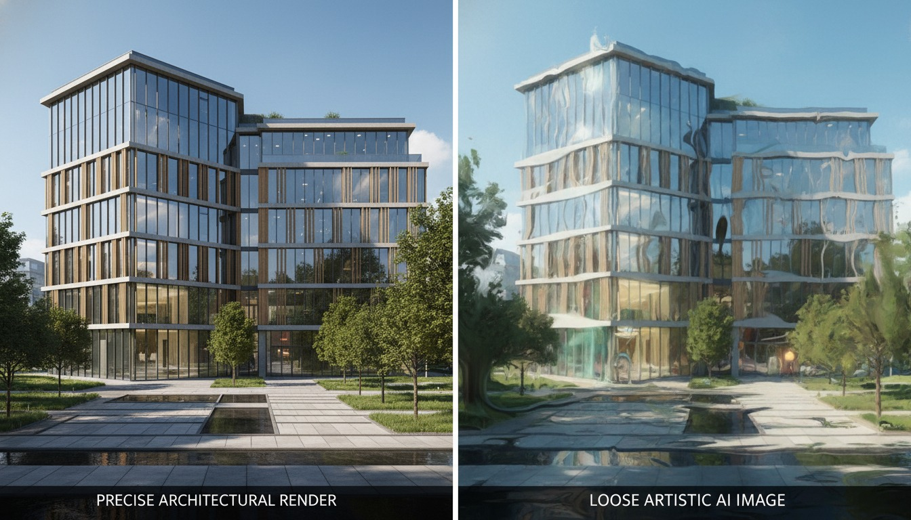

Ask which AI rendering tool is best and you'll get a listicle. Ask which ones actually understand what they're drawing and the field collapses into two camps that barely overlap. That second question is the one worth asking in 2026, because the most consequential shift this year isn't a new app — it's vendors deciding to train AI on architecture itself rather than dressing a general image model in an architecture costume.
The signal is coming from the companies that already own the pipeline. Autodesk, Chaos and Adobe are each developing AI aimed specifically at architectural visualization rather than adapting general-purpose image generators — models meant to understand building codes, construction logic and material properties. That's a different design goal from "make a pretty picture from words," and the gap it opens is the most useful way to sort the entire market right now.
Two machines, two different jobs
A general image generator — Midjourney, Stable Diffusion, the consumer Flux variants — is a probability engine for pixels. It has seen millions of images and learned what a building tends to look like. Prompt it and it composes a plausible facade: convincing light, convincing materials, convincing depth. What it has no concept of is the building behind the image. There is no model, no geometry, no notion that a mullion has to land on a grid or that a cantilever needs something holding it up. It is, in the most literal sense, drawing the outside of a thing it cannot see.
A purpose-built architectural tool starts from the opposite end. Chaos Veras, for instance, is diffusion-based like the general tools, but it applies materials, lighting and style to your actual geometry while preserving the proportions of the model — it renders the building you made, not a building it imagined. Autodesk's direction with Forma points the same way: AI woven into a design environment that already knows the site, the massing and the program. The job is no longer "invent something that reads as architecture." It's "reason about the architecture that already exists and make it legible."
One machine paints a building. The other one knows it's a building. That distinction is the whole story.
Why "understands the building" is a real spec, not marketing
It's easy to wave this away as positioning. It isn't, and you can feel the difference the moment a project moves past the concept board. Three things separate a domain-trained tool from a general one in practice:
1. Geometric consistency across iterations
Generate four options from a general model and you get four different buildings — the window rhythm shifts, the roofline migrates, a floor appears. A tool anchored to your geometry gives you four treatments of the same building. When a client says "the third one, but warmer," you can actually deliver that, because the third one still exists in the next render. This is the single biggest practical reason studios drift toward integrated tools, and it's a theme we've traced before in why integration is beating polish.
2. Construction and code awareness
A model trained on architectural data, as the 2026 vendor roadmaps describe, can begin to respect things a general generator never will: egress logic, structural plausibility, material behaviour under real light, the difference between a drawing that communicates and one that misleads. We're early here — nobody should treat today's tools as a code checker — but the direction matters. A render that quietly violates how buildings go together is worse than no render, because it sells a lie to a client and a contractor who will both believe the picture.
3. Material truth
General models hallucinate materials beautifully and incorrectly: glass that reflects a world that isn't there, brick coursing that dissolves under a second look, a metal panel that shimmers because the model re-imagined it. Purpose-built tools that understand material properties hold those surfaces steady, which is exactly what you need when a material board has to match the render and the render has to match what gets built.
General image generators optimise for how a building looks and are unbeatable for unconstrained ideation. Purpose-built architectural AI optimises for whether the building holds up — geometry, code logic, material truth — and wins the moment accuracy becomes the deliverable. The mistake isn't picking one. It's using the wrong one for the phase you're in.
Where the general generators still win
This is not a eulogy for Midjourney. There's a phase — the earliest one — where not understanding the building is the point. When you're chasing a feeling, an atmosphere, a form you haven't justified yet, a general generator's willingness to invent is a feature. It will hand you a mood and a silhouette no geometry-locked tool would dare propose, and that surprise is genuinely useful before anything has to be buildable. The danger is only in carrying that output downstream as if it were a real proposal.
| Phase / Need | General image generator | Purpose-built architectural AI |
|---|---|---|
| Early concept, mood, form-finding | Best — invents freely | Constrained by design |
| Consistency across iterations | Drifts — new building each time | Holds your geometry |
| Material & code plausibility | Hallucinates convincingly | Reasons about real properties |
| Client-facing accuracy | Risky — sells a fiction | Defensible — tied to the model |
| Fits existing BIM/CAD workflow | Detached | Integrated (Revit, SketchUp, Rhino…) |
Our take: buy the model, not the moment
The hype cycle rewards whichever tool produced the prettiest image this week. The divergence we're describing rewards something slower and more valuable: a tool whose understanding of buildings deepens over time. A general generator gets a better aesthetic with each release; a domain-trained tool gets a better grasp of architecture with each release. Over a career, those compound very differently. One keeps making nicer pictures of imaginary buildings. The other gets closer, year over year, to reasoning about yours.
So when you evaluate an AI tool in 2026, stop leading with "how good do the images look." Lead with "does this thing know it's looking at a building." Ask where the output is anchored — to a prompt, or to your geometry. Ask whether the vendor is training on architecture or borrowing a general model. Ask what happens on the fourth iteration. Those questions sort the market faster than any gallery of hero renders, and they predict which tool will still be load-bearing when the project gets real.
None of this means abandoning the general tools — it means knowing which machine you're holding. Use the painter for the dream and the domain model for the building. The studios that get burned in 2026 won't be the ones using AI; they'll be the ones who took a beautiful render from a model that never understood what it drew, and carried it into a room where someone expected it to be true.
If you're auditing your stack this week
Run one test. Take a real project model, generate four iterations in your AI tool, and lay them side by side. If you're looking at four versions of your building, you're holding a purpose-built tool and you can trust it further downstream. If you're looking at four different buildings that happen to share a vibe, you're holding a general generator — keep it, but keep it upstream where invention is the job. That one test tells you more than any spec sheet, and it's the fault line the whole market is reorganising around.
We test AI rendering tools on real project work and publish the honest version — including which ones understand the building and which ones just paint it. Join the studio newsletter for weekly field notes, or read our companion piece on geometry-aware renderers and why anchoring matters.
Reported from public 2026 vendor and industry materials describing the shift toward purpose-built architectural AI from Autodesk, Chaos and Adobe. The framing, comparisons and caveats reflect Vista Studios' experience using both general and domain-trained tools on live projects; we have not independently benchmarked unreleased vendor models. No affiliate relationship with any tool named.